Setting up the Application
The following guide will walk you through with setting up the Demo Application.
At first it is required to enable developer mode, as to install unpublished Chrome OS Application on your browser.
- Open the menu button at the top of Chrome. It's the one with three vertical dots.
- Navigate to More tools > Extensions
- Alternatively you can access the same typing chrome://extensions/ on browser address bar
- Check on Developer mode on top-right corner (Please refer image below).
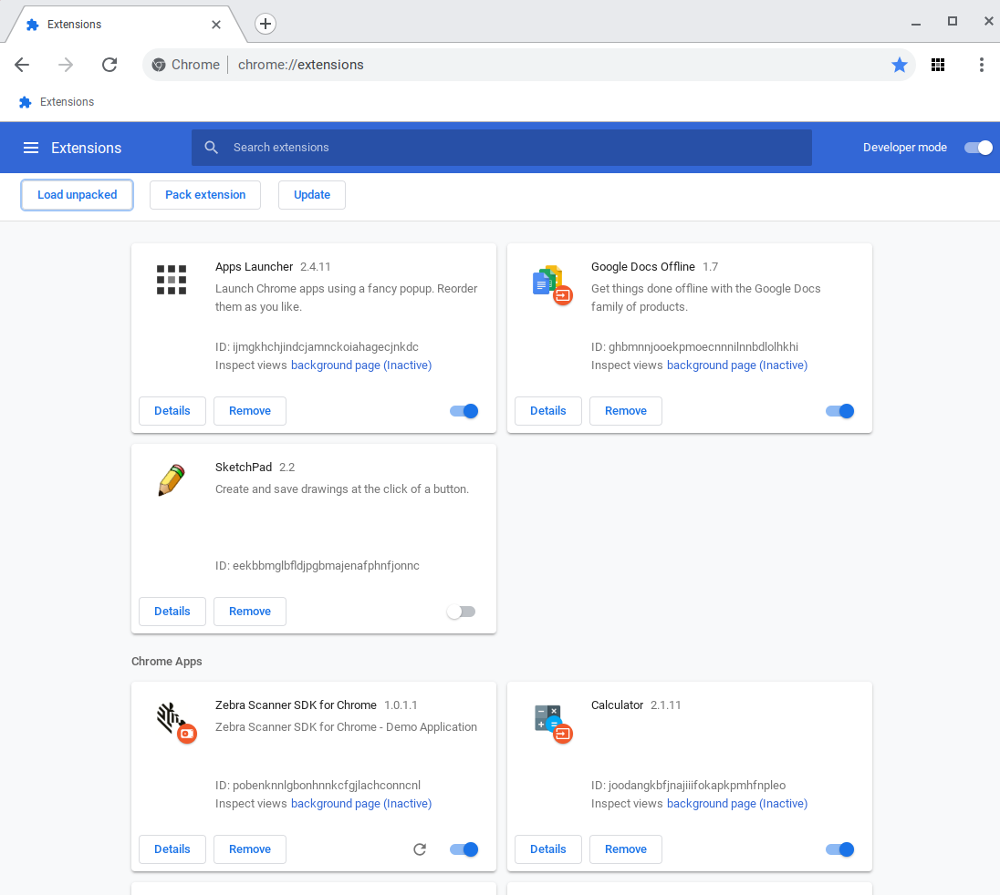Figure How to install 'Zebra Scanner SDK for Chrome - Demo Application'
- Download the Demo Application zip folder and extract to the local hard disk, a desired path to save
- Go to the Extensions page and click Load unpacked
- Using the file picker, navigate to Demo Application root folder DemoApp_for_ChromeOS_vX.X.X.X and select it to load the application.
- 'Barcode Scanner Control App for Chrome - Demo Application' will be listed on Extensions under the Chrome Apps.
Removing the Application
- Open Extensions and scroll down to 'Barcode Scanner Control App for Chrome - Demo Application'
- Click on Remove and accept the confirmation dialog.
Application Execution
Running on Chrome Browser
- Open Apps Launcher for Chrome in the Chrome browser
- Select Barcode Scanner Control App for Chrome
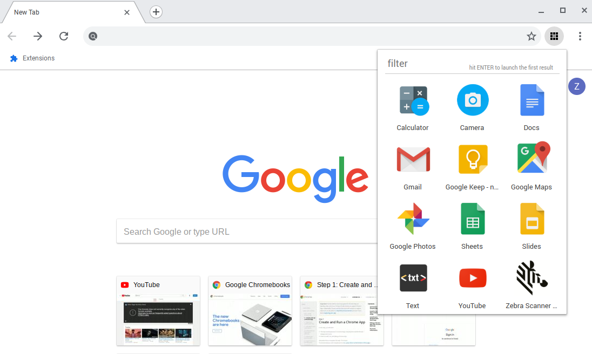Figure How to run Demo Application on Chrome browser - Scanner SDK for Chrome
Running on Chromebook
- Open Apps on Chromebook.
- Select Barcode Scanner Control App for Chrome.
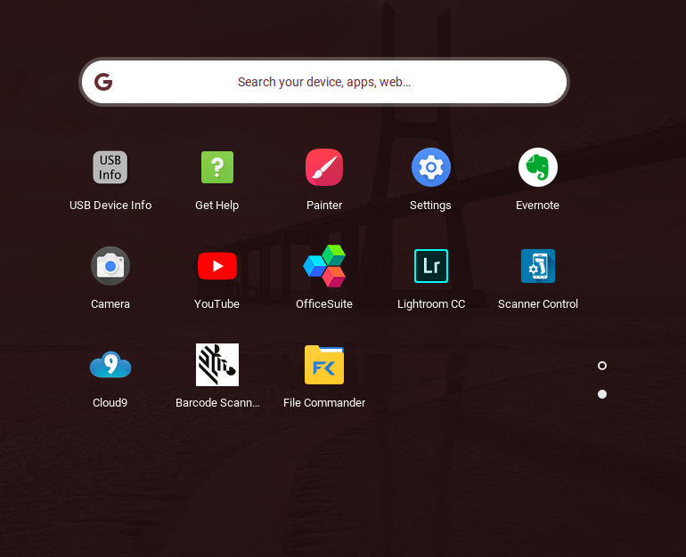Figure How to run Demo Application on Chromebook - Scanner SDK for Chrome
Discover Scanners
-
Click Discover button to discover available Zebra barcode scanner devices.
NOTE Scanners only in SNAPI host manageable mode will be listed on discovered scanners list.
- Available barcode scanners will be populated in the drop-down list.
- Details of the selected barcode scanner (Communication Interface, Serial Number, Model Number, Firmware version, Date of Manufacture, Configuration) are available in “"Assert Information" text box.
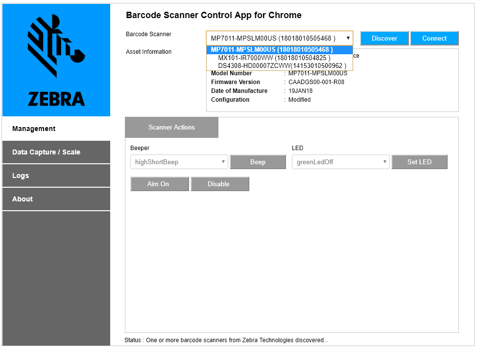Figure How to discover available Zebra Scanners
Connect to a Barcode Scanner
- Click the Connect button to connect to the root barcode scanner selected in the drop-down list.
- The same button can be used to disconnect from the barcode scanner, after successful connect.
- The barcode scanner asset information will be displayed on the sample application upon establishing a successful connection with the barcode scanner.
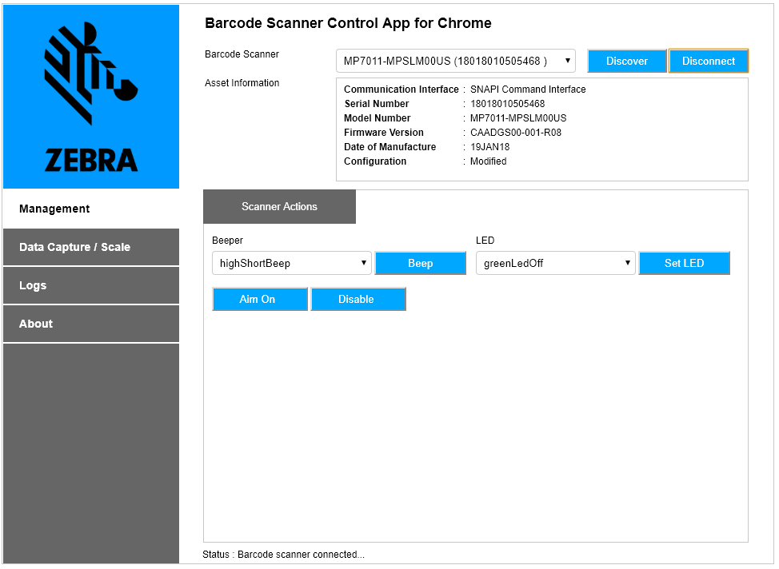Figure How to connect Zebra Scanner from available scanner list
Disconnect from a Barcode Scanner
- Click the Disconnect button to disconnect from a barcode scanner previously connected to.
- The same button can be used to reconnect to the barcode scanner.
- Alternatively a different root barcode scanner can be selected from the drop-down list to disconnect from the currently connected barcode scanner and connect to a different barcode scanner.
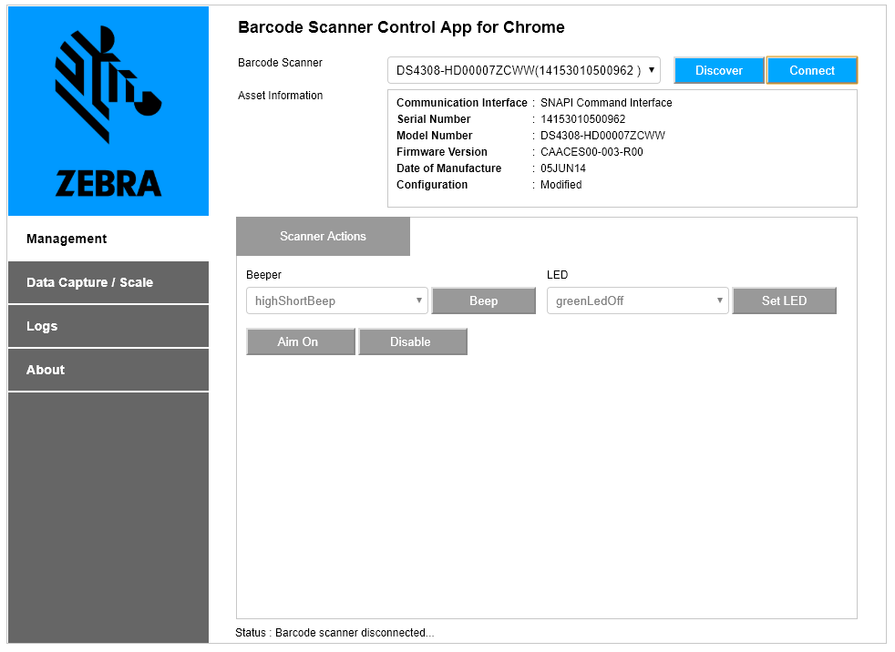Figure How to disconnect the connected scanner
Barcode Data
- Scan a barcode from connected barcode scanner.
- Barcode data (Decoded data, Symbology) displayed in 'Data Capture / Scale' section.
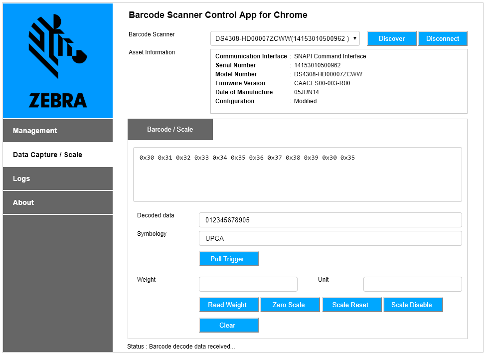Figure Barcode data from the connected scanner
Auxiliary Scanners
- Auxiliary scanner tree available in the 'Barcode Scanner' drop-down list.
- To send a command to Auxiliary scanner user should select specific scanner from the device tree.
- To execute command for Auxiliary scanner it is necessary to connect root scanner with the Barcode Scanner Control App for Chrome.
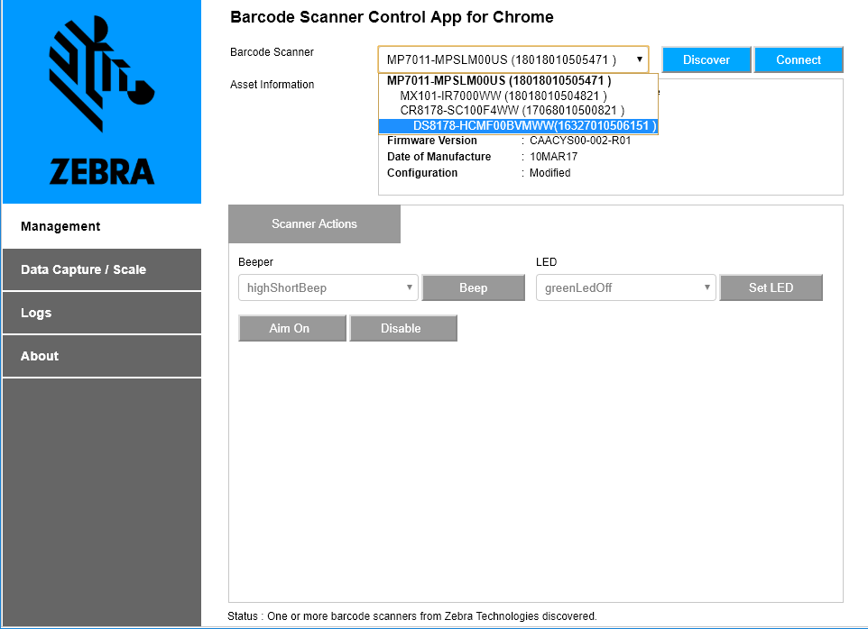Figure Command execution for Auxiliary scanner
Enable / Disable a Barcode Scanner
- To enable a barcode scanner for barcode decoding, click the Enable button. By default the barcode scanner is enabled when it is connected to host.
- To disable a barcode scanner for barcode decoding, click the Disable button.
Figure How to enable the connected scanner
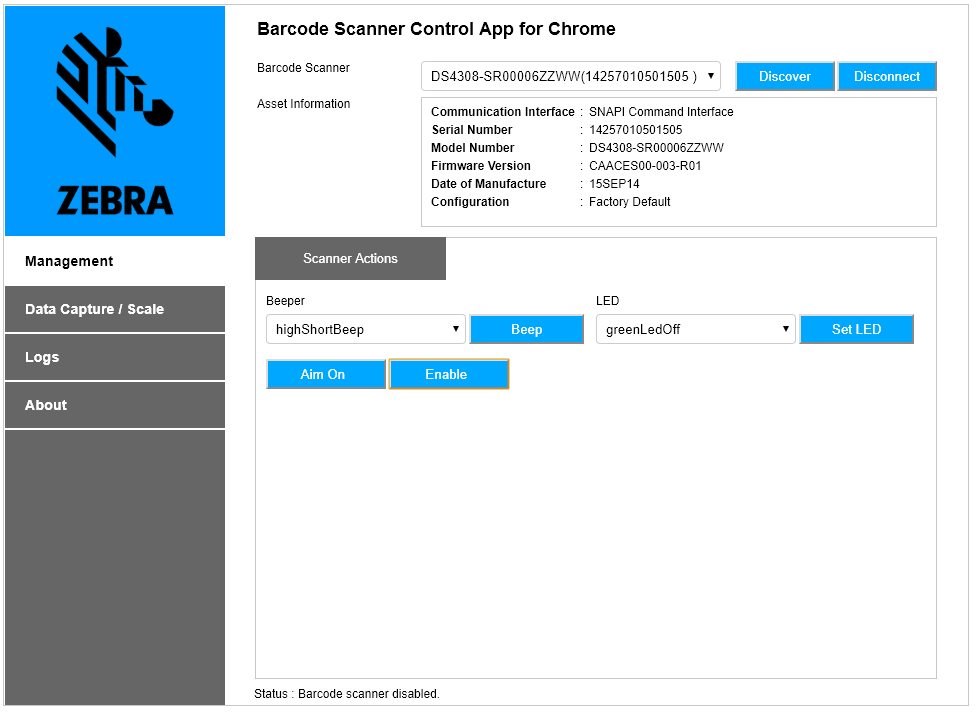Figure How to disable the connected scanner
Beeper Action
- Select beep pattern from the 'Beeper' drop down list and click the Beep button.
- Beeper action executes selected beep pattern.
Figure How to beep the connected scanner
LED Action
- Select LED option from the 'LED' drop down list and click the Set LED button.
- LED action execute according to selected LED option.
 Figure How to execute LED pattern of the connected scanner
Figure How to execute LED pattern of the connected scanner
Aim Control
- Click the Aim On button to turn on aim Of the barcode scanner which is selected in the dropdown list.
- The same button can be used to turn off aim Of the selected barcode scanner.
Figure How to Aim On of the connected barcode scanner
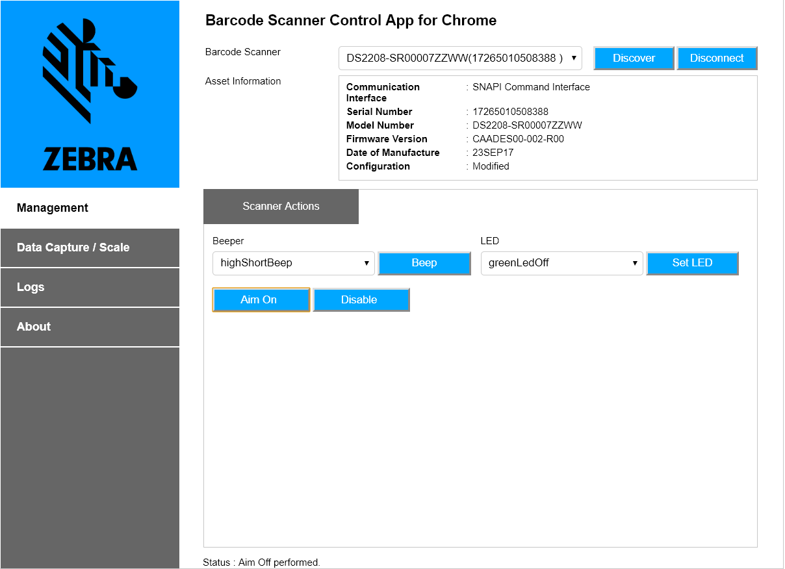Figure How to Aim Off of the connected barcode scanner
Read the Weight from the Scale
- Reading the weight from the scale is available on barcode scanners that have an integrated scale functionality.
- To read the current weight reading from the scale, click on the Read Weight button. The weight and the unit of measure will be displayed on the respective text boxes.
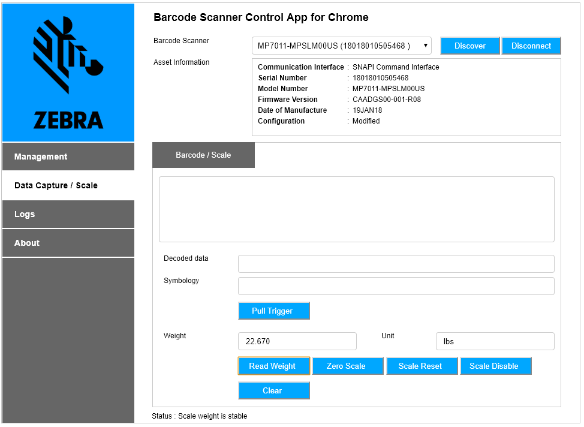Figure How to read weight of connected "MP6XXX/MP7XXX" Scanner
Zero Scale
- To zero out the weight reading of the scale, click on the Zero Scale button.
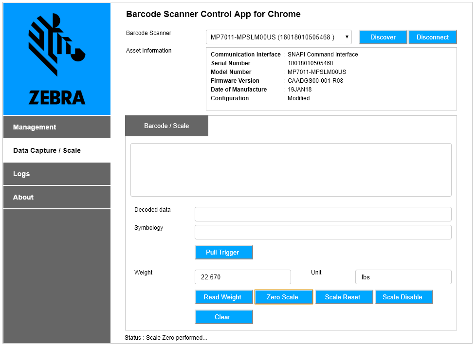Figure How to zero out the weight of "MP6XXX/MP7XXX" scanner
Reset Scale
- To reset the scale, click ont he Reset Reset Scale button.
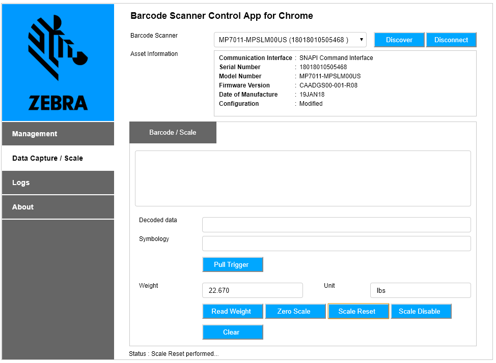Figure How to reset the scale of "MP6XXX/MP7XXX" scanner
Enable / Disable a Scale Integrated Barcode Scanner
- To enable scale integrated barcode scanner for read weight, click the Scale Enable button.
- To disable scale integrated barcode scanner for read weight, click the Scale Disable button.
Figure How to enable the scale integrated barcode scanner
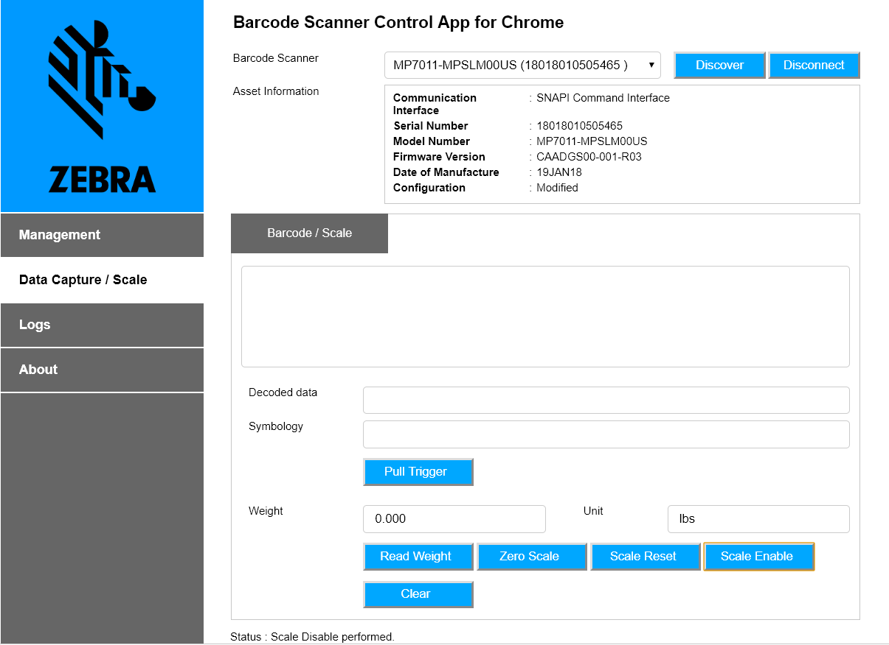Figure How to disable the scale integrated barcode scanner scanner
Pull / Release trigger of Barcode Scanner
- To pull the trigger of the scanner, click the Pull Trigger button.
- To release the trigger of the scanner, click the Release Trigger button.
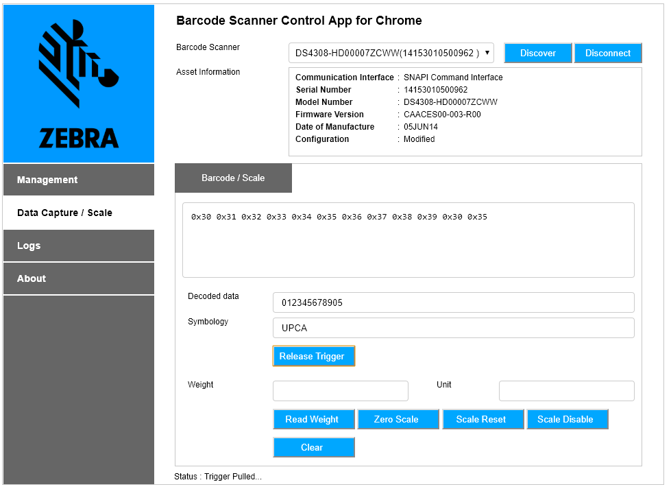Figure How to pull the trigger of the barcode scanner
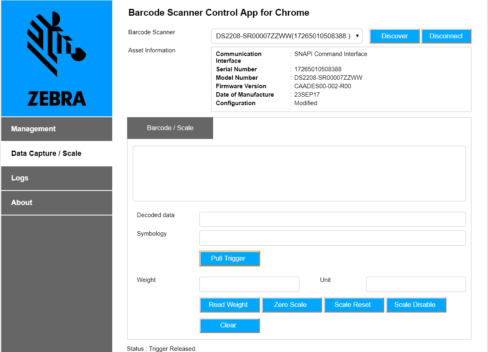Figure How to release the trigger of the barcode scanner